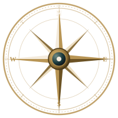
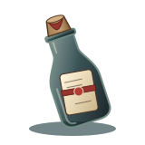

NEHAL VYAS
"Exploring the intersection of code, design, and imagination."
I'm building my skills in Python, exploring design, and turning curious ideas into thoughtful digital experiences.
Captain's Logbook
A record of intellectual pursuits, analytical habits, and creative exploration.
A Mind That Likes to Explore
Analytical Mind
Approaching problems through structured reasoning, deliberate testing, and breaking down complexity into clear, navigable components.
Creative Eye
Exploring visual balance, typography, color harmony, and the subtle details that elevate a digital interface from functional to memorable.
Curious Explorer
Constantly venturing into new libraries, languages, and creative domains with humility and a relentless drive to master modern tools.

The Captain's Instruments
An honest assessment of computational tools and design competencies. No fabricated percentage meters — only deliberate practice.
Python Programming
Primary Computational AnchorPython serves as my primary anchor for computational problem-solving, structured scripts, and data exploration.
Visual Design & UX
Aesthetic Drafting CompassDeveloping an intuitive feel for layout rhythm, typographic hierarchy, and atmospheric user experiences.
Rigging & Tackle
Daily EquipmentThe practical instruments I employ daily to write, version-control, document, and manage my work.
Treasures of the Voyage
Each project is a destination charted across the sea. Click any island waypoint on the antique map to trace the route and inspect the discovery.
The Chart Room
Pinned notes, reading explorations, and future experiments under study in the captain's private quarters.
Send a Message Across the Sea
"Every Great Voyage Begins with a Conversation."
